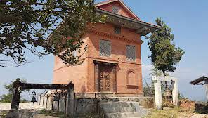

Tripurasundari Mai is a sacred vicinity for Hindu peoples. Usually, withinside the
month of November, an annual fair is held in Tripura Sundari temple nearby. Over here
each yr a non-secular fair happens three days before the full moon. Devotees provide
unique prayer with animal sacrifices. Priests from surrounding villages also go to
the temple beating drums and chanting mantras. A holy stone is likewise the main
enchantment of this trekking that’s quite kept by the local Hindu people in that
region
It is assumed that a holy stone preserves the divine strength which is likewise called the continuing source of spring